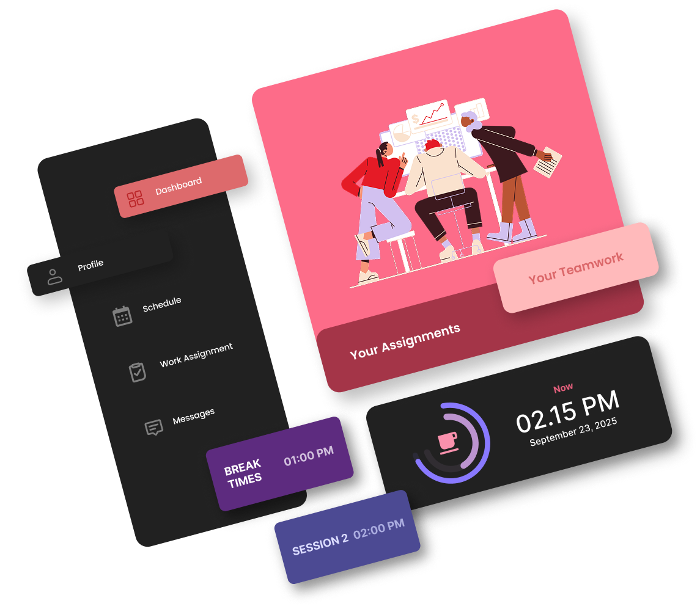
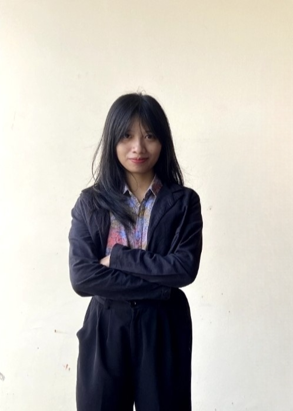
Diva Carinda is a passionate Information Systems student dedicated to bridging the gap between complex programming and intuitive UI/UX design.
Focused on Web Developer and Interface Design, I believe that every digital product should tell a visual story that resonates with users.
Focused on Web frontend, interface design, and user experience.
Actively developing skills in modern web technologies.
Current GPA: 3.24 / 4.00
Completed high school with a focus on science and mathematics,
providing a strong foundation for analytical thinking.
Average Grade: 85.07
Created designs for organizational needs such as social media content on Instagram and Facebook, as well as mockups for the Creative Economy Division (Ekraf), considering concepts and current trends.
Coordinator of Publication & Design
Led the division team, coordinated task distribution, and conducted weekly performance evaluations.
Design and Documentation Member
Developed event branding materials including t-shirt designs, paid promotions, and captured key moments.
Design and Documentation Member
Produced photo and video documentation, highlight reels, and designed digital assets like virtual backgrounds.
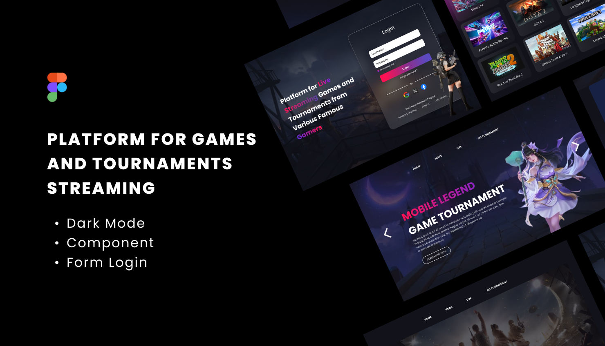
A dedicated gaming & tournament platform with dark mode.
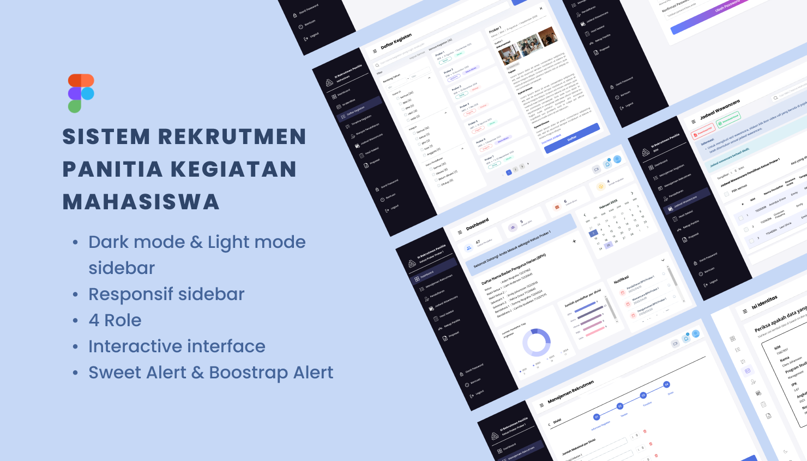
Designed a role-based recruitment system UI/UX with structured workflows, responsive layouts, and intuitive dashboard interactions.
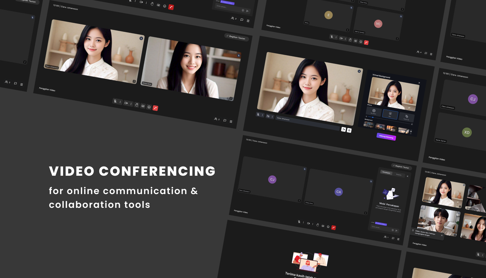
Designed a video conferencing UI/UX that prioritizes usability, real-time collaboration, and efficient participant management.
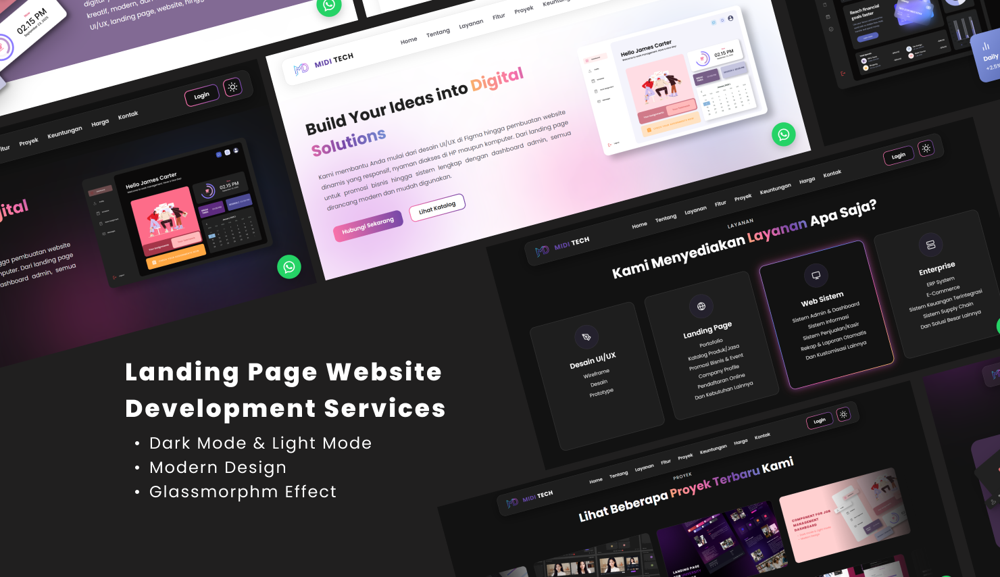
Developed a modern, tech-oriented company profile landing page with dark and light modes to enhance brand presence and user engagement.
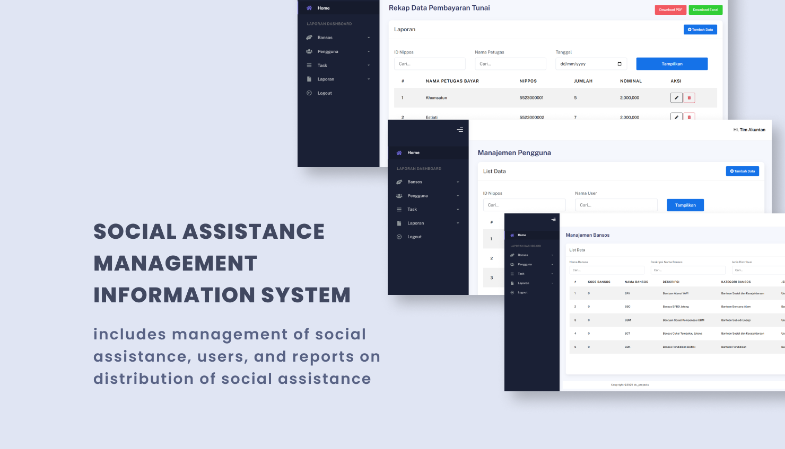
Built a web-based system to manage social assistance data, beneficiaries, and reports efficiently in a structured and centralized platform.
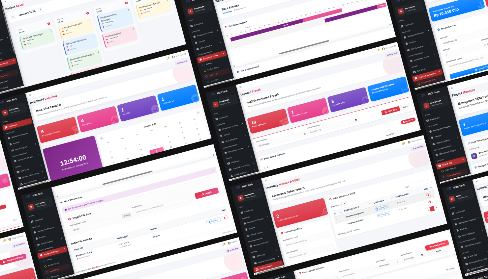
Developed a comprehensive ERP system covering order management, project tracking, task workflows, HR, finance, reporting, and data visualization in one integrated platform.
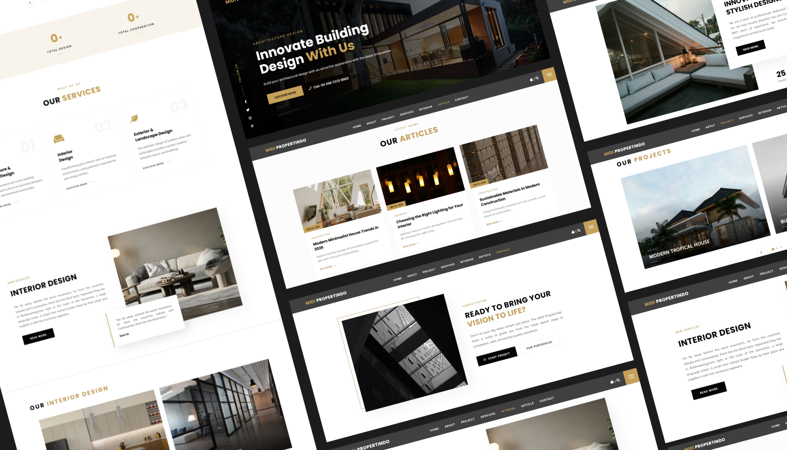
Developed a modern landing page for an architecture service company showcasing exterior, interior, and building design services with a bold black, white, and yellow color scheme.
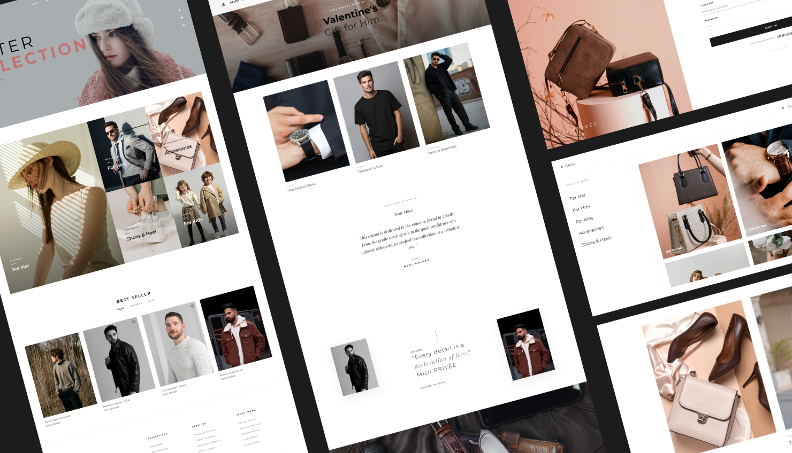
Developing a modern and luxury-inspired fashion e-commerce website featuring a clean, exclusive design and a scalable system architecture for future growth.
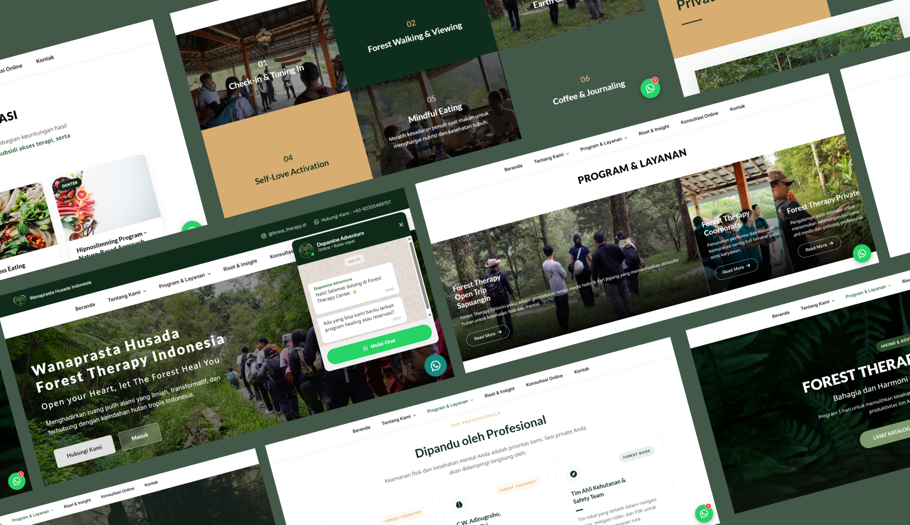
Developed a web-based system and multi-page landing site featuring admin management, articles, online consultation, donations, and forest therapy activity content.
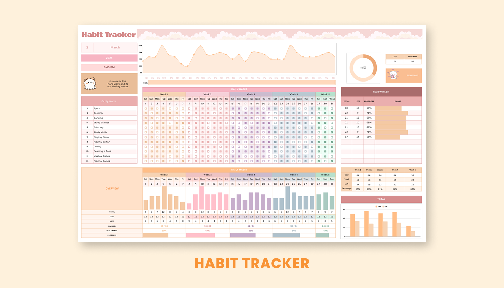
A template for recording and tracking daily habits each week with progress charts and monthly percentage completion.
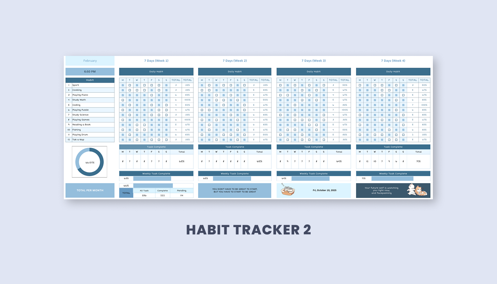
A stylish, user-friendly habit tracking sheet with trend charts, weekly evaluation tables, and motivational visuals.
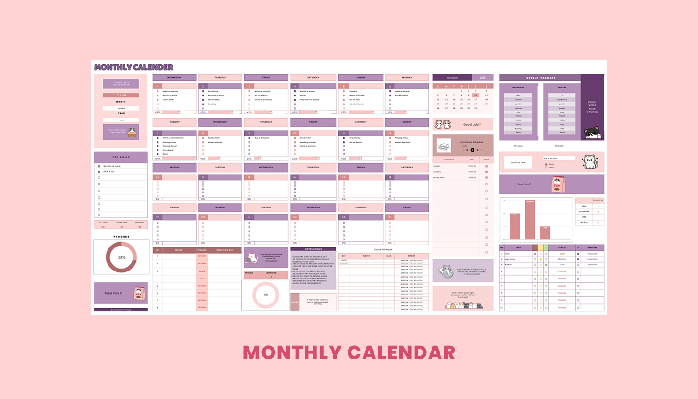
A monthly calendar for tracking activities, tasks, and projects with goals, daily schedules, and progress charts.
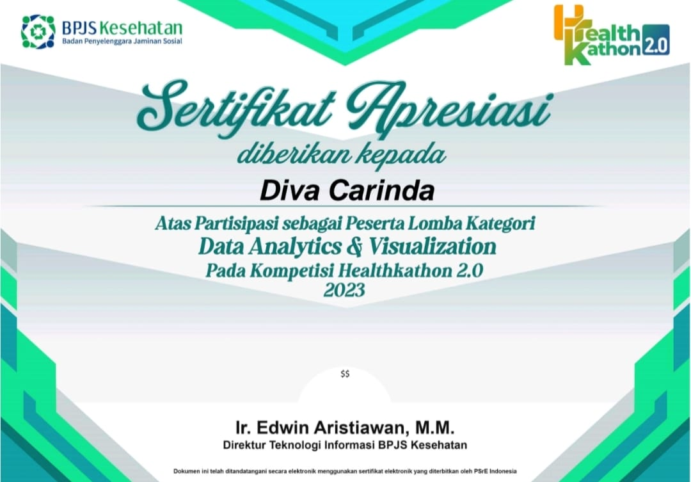
Released by: HealthKathon 2.0
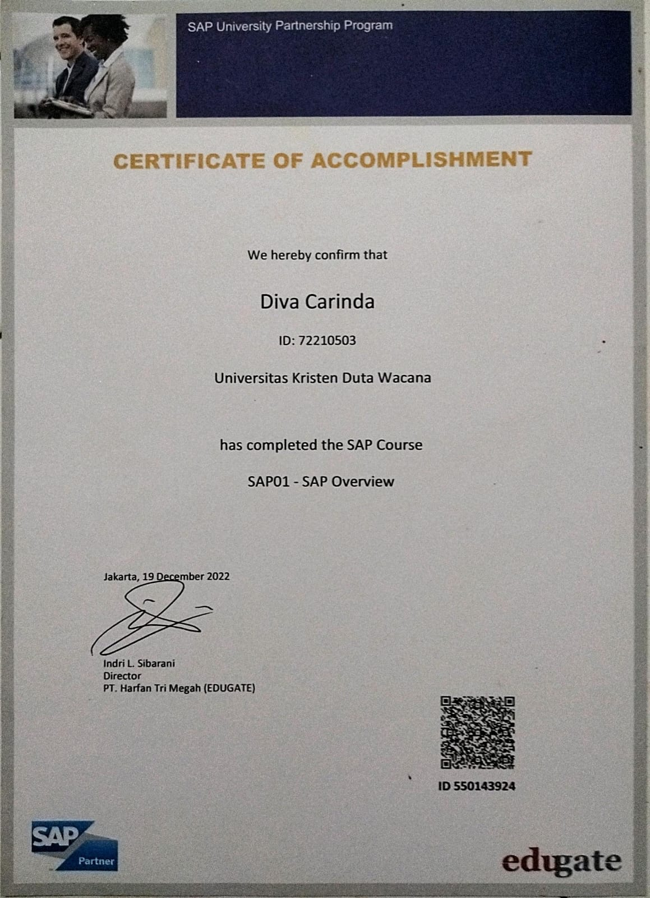
Released by: Oracle
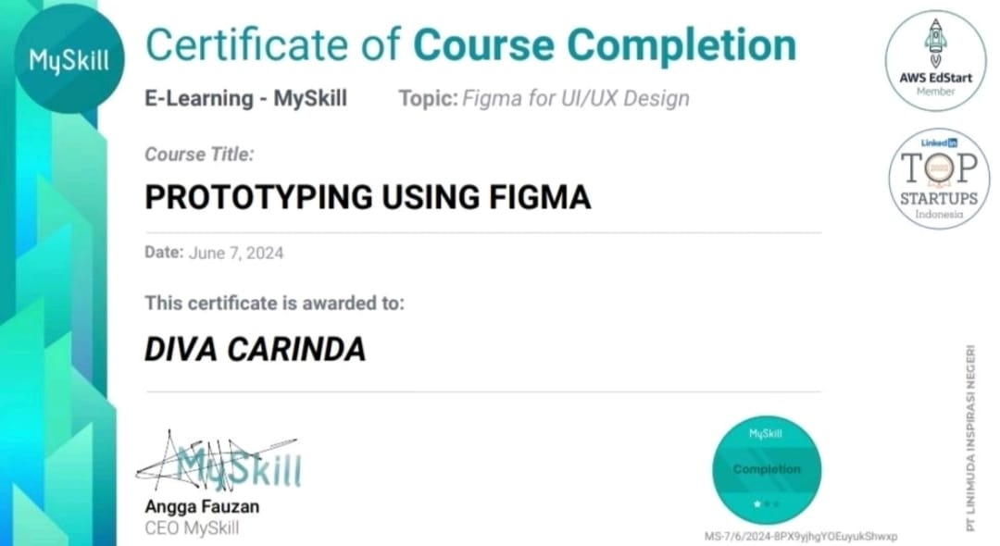
Released by: MySkill
All Course:
Introduction to Figma | Figma Tools | Wireframing for Website | Designing Profile Page | Designing Dashboard UI | Prototyping Using Figma
I'm always open to discussions, collaborations, or new opportunities. Feel free to contact me via email or social media.